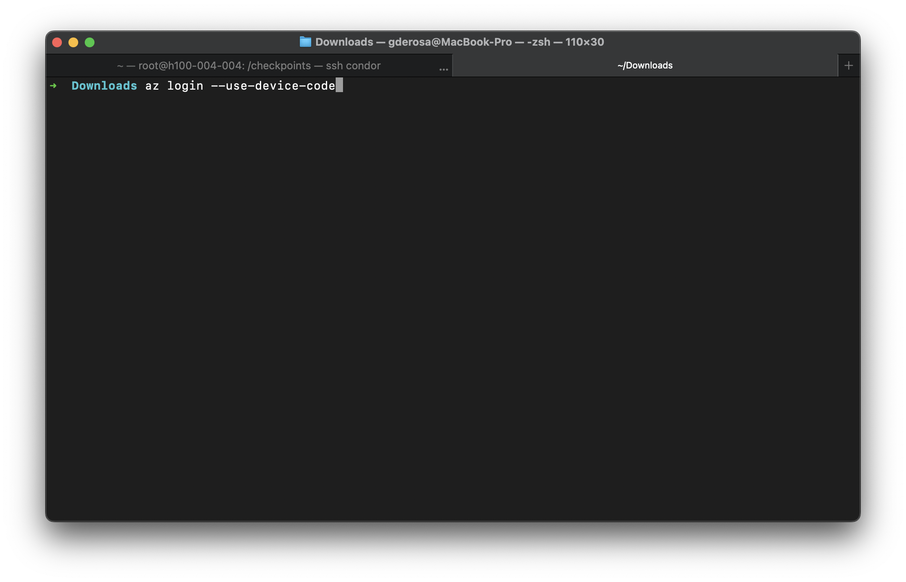
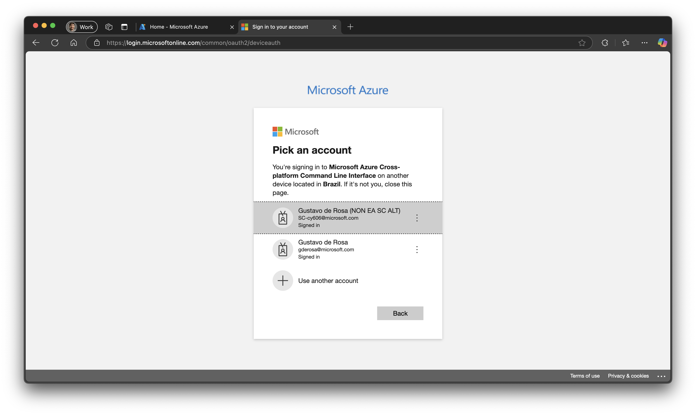
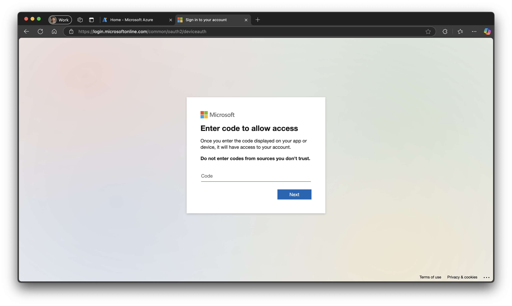
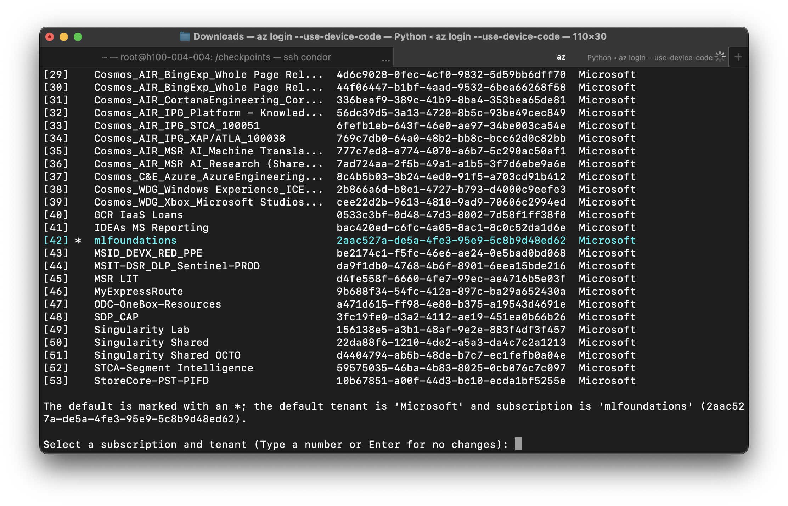
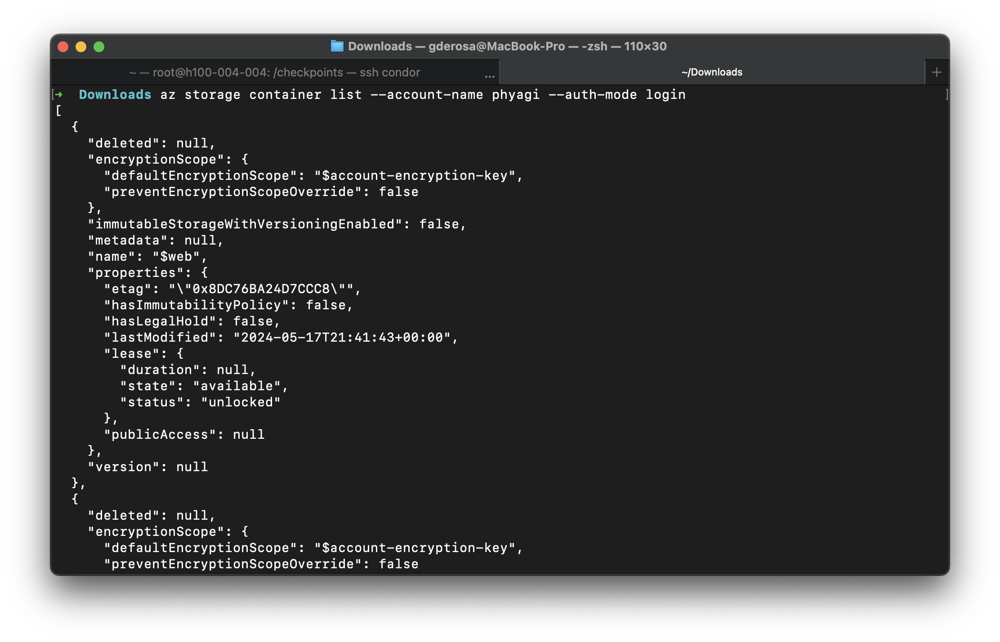
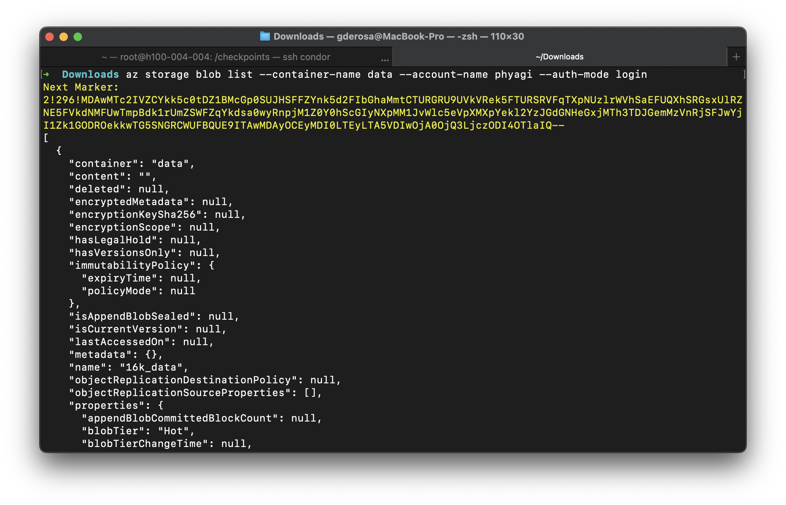
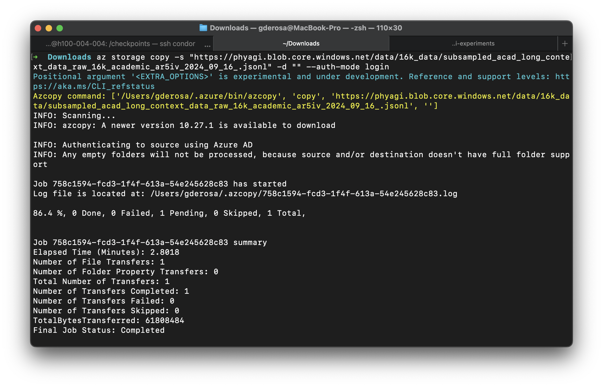

Azure Storage Account#
Accessing Azure storage securely without shared keys ensures better compliance with security policies by leveraging Azure Active Directory (AAD) and Role-Based Access Control (RBAC). This guide explains how to securely access storage resources and transfer files using Azure CLI or AzCopy.
Prerequisites#
Note: az storage copy is an alias/replacement for azcopy copy.
Configure access via Azure AD#
Use Azure CLI to authenticate:
   az group create --name <RESOURCE_GROUP_NAME> --location <LOCATION>
Verify your access:
az storage container list --account-name <storage-account-name> --auth-mode login
Accessing storage resources without keys#
You can interact with Azure Storage resources using Azure CLI commands without specifying account keys:
List blobs in a container:
az storage blob list --container-name <container-name> --account-name <storage-account-name> --auth-mode login
Upload a file to a container:
az storage copy -s <source-local-folder> -d <destination-remote-folder> --auth-mode login
Download a file from a container:
az storage copy -s <source-remote-folder> -d <destination-local-folder> --auth-mode login
Mounting storage as a file system#
To mount a storage container as a file system using BlobFuse2, follow the steps below:
Prepare the configuration file:
Create a
.yamlconfiguration file with the appropriate parameters to define your storage and caching settings.allow-other: true logging: type: syslog level: log_debug components: - libfuse - file_cache - attr_cache - azstorage libfuse: attribute-expiration-sec: 120 entry-expiration-sec: 120 negative-entry-expiration-sec: 240 file_cache: path: <path-to-file-cache> timeout-sec: 120 max-size-mb: 4096 attr_cache: timeout-sec: 7200 azstorage: type: adls account-name: <account-name> container: <container> mode: azcli
Run the mount command:
Use the
blobfuse2utility to mount the storage container to a specified mount point.blobfuse2 mount <path-to-mount> --config-file <yaml-config-file>
If you plan to use the
--allow-otheroption, ensure that the system is configured correctly:Open
/etc/fuse.confwith superuser privileges:sudo nano /etc/fuse.conf
Uncomment or add the following line:
user_allow_other
Save and exit the file.
Re-run the mount command with
--allow-otherenabled.